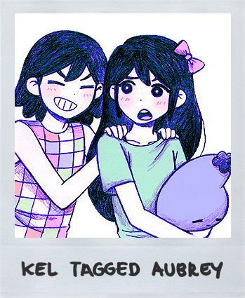
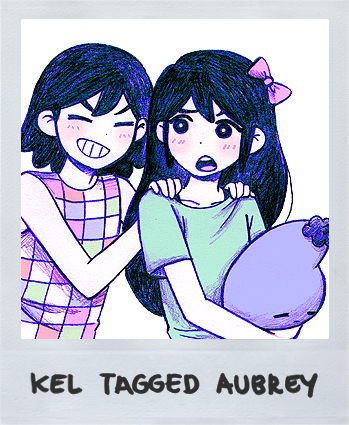
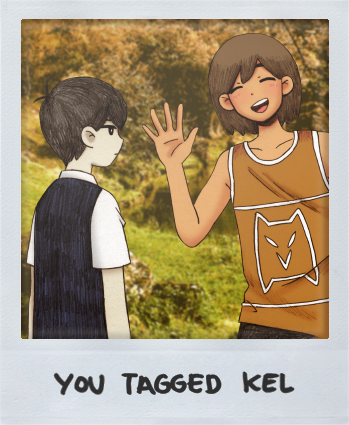
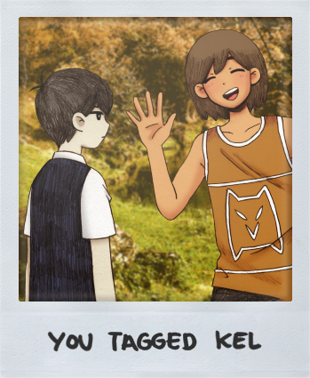

TAGGING
TAGGING é uma mecânica de jogo apresentada no OMORI.
No mundo real, o jogador é capaz de marcar diferentes personagens na liderança para superar certos obstáculos. Isso pode ser feito usando um botão atribuído ou simplesmente por meio do menu.
VISÃO GERAL
TAGGING é introduzido pela primeira vez durante a missão CAPTAIN OF THE SPACE PIRATES no JUNKYARD. OMORI é instruído a marcar um de seus amigos para remover ou superar um obstáculo em seu caminho. Essa mecânica dá aos jogadores a chance de usar a habilidade única de um membro do grupo, dependendo do cenário em que se encontram.
Em FARAWAY TOWN, o grupo só pode marcar TAG se eles estiverem no QG DO RECICLISTAS faltando um dia para a mudança. As habilidades TAG de todos os personagens jogáveis são as mesmas do grupo de OMORI, mas só podem ser usadas para determinados segmentos.
Uma coisa a se notar é que toda vez que o grupo marca, um som de fotografia é reproduzido e uma polaróide mostrando a interação com o líder atual e o novo líder irá bloquear a tela para evitar que o jogador veja a mudança.
HABILIDADES
OMORI & SUNNY
Enquanto na liderança, OMORI pode usar sua faca para cortar obstáculos como raízes, cones de trânsito e teias de aranha. OMORI também é capaz de coletar as chaves do HANGMAN espalhadas pelo Mundo Imaginário, bem como interagir com certas criaturas que só ele pode entender, como os residentes DEEPER WELL.
Exclusivo para alguns segmentos do ESPAÇO NEGRO, a opção de tag da OMORI será substituída por uma opção de STAB. Isso transportará o OMORI de volta ao hub central. Isso também pode ser feito no ESPAÇO BRANCO, que pode permitir ao jogador recuperar o controle de SUNNY no mundo real.
Quanto a SUNNY, ele pode cortar teias de aranha como OMORI, mas isso só pode ser feito no início da segunda noite. Além disso, SUNNY pode cortar cones no HQ DO RECICLISTAS, que só pode ser acessado se o jogador tiver cumprido certos requisitos para alcançá-lo. SUNNY também tem a habilidade de se esfaquear se estiver equipado com uma FACA DE BIFE durante uma FINALIZAÇÃO NEUTRA ou faltando um dia na ROTA DE OMORI.


AUBREY
Enquanto na liderança, AUBREY pode usar seu bastão para quebrar obstáculos pesados, como blocos de metal, barris ou vasos. Isso permitirá que o partido obtenha acesso adicional a algumas áreas, bem como obter CLAMS e ITENS no caso de vasos e barris localizados dentro do CASTELO DO DOCE e POÇO PROFUNDO, respectivamente (Veja TRIVIA para mais informações sobre o lançamento de itens).
Ela também é a primeira personagem que OMORI deve marcar para progredir na seção do tutorial abordada no JUNKYARD.


KEL
Enquanto na liderança, KEL pode lançar várias bolas quando estiver em uma plataforma elevada. Em SWEETHEART'S CASTLE, KEL ganha adicionalmente a habilidade de mirar sua bola em uma das três direções.
KEL também é o último personagem que OMORI deve marcar para progredir na seção do tutorial abordada no JUNKYARD. Essa habilidade é a mesma de sua contraparte do mundo real, mas só é usada ao lançar uma bola para descer uma escada no QG do RECICLISTAS.


HERO
Enquanto na liderança, HERO pode encantar personagens com seu carisma. HERO é o segundo personagem que OMORI deve marcar para progredir na seção do tutorial abordada no JUNKYARD. Ele também pode usá-lo para ganhar descontos em CAIXAS DE CORREIO e acesso à primeira área do CLUBE SANDUÍCHE.
Marcar HERO também é necessário para ganhar 20 ATAQUE em um evento no CLUB SANDWICH do LAST RESORT, onde HERO deve falar com MR. SCAREBRO algumas vezes antes de aceitar sua oferta de socá-lo.
Esta habilidade é a mesma de sua contraparte do mundo real, mas só é usada para persuadir alguns RECICULTISTAS a se juntarem ao grupo de SUNNY no QG do RECICLISTA, o que é necessário para chegar ao RECICLETA.


 

 
